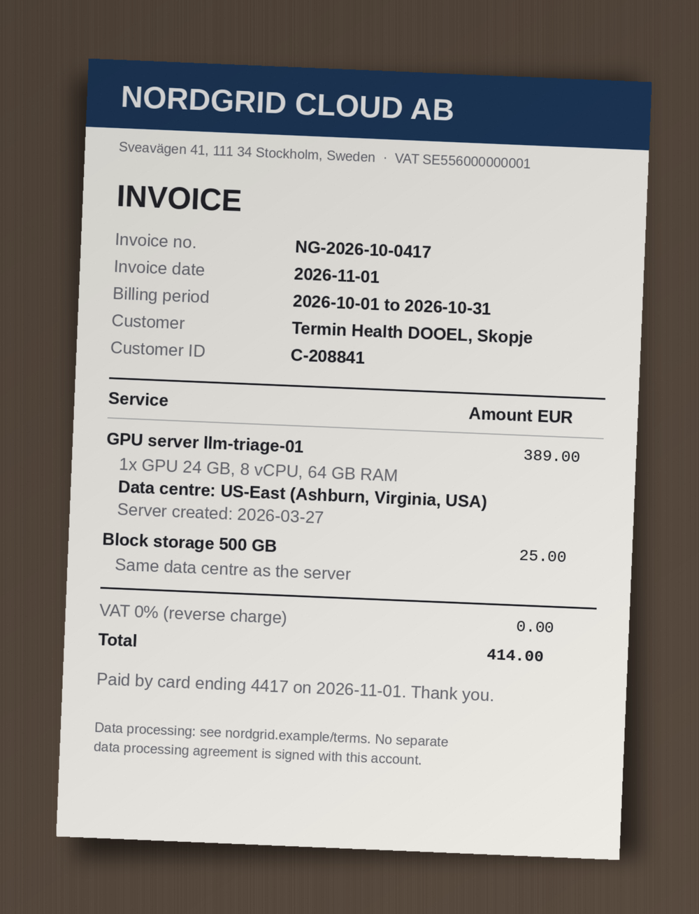

1data_inventory.csv
company_profile.md:
“all production data in the EU”
data_inventory.csv:
exports bucket, health, us-central1
TrapClean
 ×
×
Organize Evidence and Find Gaps
Tim Löhr · North Macedonia · November 2026 · 60 minutes
Before we start · 30 seconds
“Hi, I’ve written‘all patient data staysin the EU’ in the auditanswers. That’s what theprofile says. Can youcheck it before I send it?”
Head of Operations’ note · it paraphrases company_profile.md
Thumbs up or thumbs down. Keep your answer, we'll come back to it.

Your host
An audit asks for evidence you already have:
dated, signed and in one place.
M.Sc. Computer ScienceFAU Erlangen-Nürnberg
Audits · 2026
Hands up: who has been asked for proof by a customer, an auditor or a bank?
Customers
1 customerA processor has to allow audits and inspections by the controller whose data it holds.
GDPR Art. 28(3)(h)
Certifiers
1 certifierISO/IEC 27001 certificates typically run three years, with a check audit every year.
ISO/IEC 17021-1 practice
The law
1 lawNorth Macedonia's data law is modelled on the GDPR. The EU AI Act asks firms to support staff AI literacy.
Law 42/2020 · AI Act Art. 4
One folder of dated evidence can answer all three.
How an audit samples
They don't read everything. They pick one record and follow it from the request to the proof.
one erasure request
the clinic's message
every place the data sits
who deleted what, when
a record you can show
3-erasure-request.md
ticket, 2 Sep 2026
data_inventory.csv
the deletion log
nothing to show
no proof
A finding is a thread that ends
before the proof.Where would yours break?
What counts as evidence
Every answer in this workshop passes the same five questions.
Is it there?
A policy nobody wrote down is not a policy.
Is it current?
A certificate that expired last month.
Does it cover the claim?
A test of the website that skips the API.
Is it signed and owned?
A contract that is still marked draft.
Does it agree with the other files?
A policy says one thing, a log shows another.
web_test_report_2024.txtinventedweak
2Report date: 2024-03-1532 months old
3Scope: website only, no API
4Tester: Bluepeak Security (external)
5Other files: no conflict
A current file shows the answer, even when it is bad news.
A file exists, but it is old, partial, unclear or in conflict.
No file, or only “pending” or “not done”. Name the document that would close it.
audit evidence: verifiable records relevant to the audit criteria · ISO 19011:2018
The case · invented
20days to go
Software company · Skopje
Clinics book appointments and send lab results through its portal. It holds health data, uses a Claude workspace and runs its own open-weights model (an AI model it runs itself).
Rules in play: GDPR Art. 28 and 44 to 46, ISO/IEC 27001 Annex A, AI Act Art. 4. Summary in audit_topics_reference.md. Not legal advice.
Customer audit · remote
Thursday 3 December 2026 · today is 13 November
The company is invented. The laws and standards are real.
Today is 13 November 2026.
The audit is on 3 December. Every expiry check uses both.
Only our files. Never invent a fact.
Cite file and row. Count in code.
No file: GAP.
Old, partial, in conflict: WEAK.
Several parts: the weakest one.
Rule 1
Only our files. Never invent a fact.
Rule 1 prevents
invented evidence
Rule 2
Cite file and row. Count in code.
Rule 2 prevents
answers nobody can check
Rule 3
No file: GAP.
Old, partial, in conflict: WEAK.
Several parts: the weakest one.
no file in the folder
old, partial, unclear or in conflict
Bad news in a file is still COVERED, plus an action.
Today is 13 November 2026. The audit is on Thursday 3 December 2026. A file is current if dated on or after 3 December 2025. Fictional training data. Every company, person and document is invented. You are the audit evidence assistant of Termin Health DOOEL, a software company in North Macedonia. Answer in plain, short English. Three rules: 1. Only our files. Never invent a fact, a date or a number. 2. Cite the file name and the row (such as E03, INC-04, adm-06) or the quoted words. Never cite line numbers. Do every count and date calculation in code. 3. COVERED: a current file answers the request in full, even when the answer is bad news; then add an action. WEAK: a file answers, but it is old, has an empty or "not recorded" cell, or disagrees with another file; say which. GAP: no file answers it, or the file only says "pending", "none" or "not done"; name the document that would close it. Several parts: the part that is missing or old sets the status; name it. Example: Nordgrid's DPA is pending, so D2 is GAP though four suppliers are fine. Claims: RED (a file says the opposite), AMBER (missing, pending or not fully proven), GREEN (a file proves every word, for all systems with health data); "all" or "every" fails on one exception. A named owner or approver counts as signed; "accepted online" counts as signed. Never write "compliant" or "certified". Use IDs, no patient names.
kit: project-instructions.md · Copy takes the full text
Even AI legal research tools hallucinated in 17 to 33% of queries (Magesh et al., 2025).
So a person checks each answer.
Seven traps and one clean file
are hidden in this folder.Five are on your cards. Claude finds the other two.on your cardsClaude findsclean file
Your turn · 3 minutes · in pairs
session 0:00
Five of the seven traps are on these cards. One card is clean. Mark each card as trap or clean.
1data_inventory.csv
company_profile.md:
“all production data in the EU”
data_inventory.csv:
exports bucket, health, us-central1
TrapClean
2supplier_register.csv
Nordgrid Cloud AB, GPU server
data shared: health
DPA: pending · transfer: none
TrapClean
3pentest_summary_2025.txt
Report date: 2025-02-28
Out of scope: back office,
exports, any AI component
TrapClean
4access_review_2026.csv
adm-04 left 2026-06-30
last login 2026-08-02, keep
adm-06: MFA no, keep
TrapClean
5incident_log_2026.csv
INC-03 detected 2026-05-04
customer told 2026-05-11
Contract: within 48 hours
TrapClean
6backup_restore_test_2026.txt
First restore attempt failed.
Cause fixed, change CH-0412.
Second attempt: 3 h 10 min
(target 4 h)
TrapClean
DPA = signed contract with a supplier.MFA = password plus a second proof.Pen test = outside hacker test.Out of scope = not tested.
3:00
Starts on Go. Keep your sheet: Claude reads the same files next.
Points: 2 per trap found before Claude. Plus 1 for the clean card.
Minus 1 if you call the clean card a trap.
Step 1 · MondayRheinland Praxisverbund AG · a customer audit in 20 days
session 0:00
new chat · attach inbox/1-rheinland-document-request.md
Answer the audit document request in the attached file. Return one table with exactly one row per item, D1 to D8: # | Request | Answer | Source | Status (COVERED, WEAK or GAP). Count in code before you give any share or total. Give the security share and the AI share separately. After the table, at most 3 short lines: the counts and one caution.
Live in Claude
session clock
0:00
Before Claude answers
Your bet: how many of these 8 come back COVERED?
Answer key · the statuses the files prove
Two of the three COVERED answers carry bad news: the file proves that we fail a rule, so each comes with an action.
kit: ANSWERS.md, Step 1
D5 · Training share · covered, plus an action
Security training26 of 31
AI use training19 of 31
83.9% and 61.3% against the customer's 95%. That is 30 of 31 people: 4 more in security, 11 more in AI use.
D6 and D7 · the proof is bad news
INC-03212 patient records, wrong clinic▼
0 h
48 h
168 h
detected 2026-05-04
customer told 2026-05-11
INC-03: the fix column is empty. INC-04: open 102 days.
adm-01adm-02adm-03adm-04adm-05adm-06adm-07adm-08adm-09
8 of 9 have MFA. adm-06 has none.
adm-04 and adm-07 left the company and both still logged in.
MFA onno MFAleft, kept access
D8 · the clean file · covered
A failed first attempt that is explained, fixed and retested is evidence, not a problem.
Restore timebackup_restore_test_2026.txt
Traps in this stepClaude finds the two traps your cards hid: five tickets with patient names in the Claude workspace (D3) and the training shares (D5).
Step 2 · TuesdaySales wants these on the website and in a hospital tender
session 0:00
Safe rewrite Our production database and lab-PDF bucket are in Frankfurt, Germany.
Check the seven claims in the attached file against our files and audit_topics_reference.md. Return a table, red claims first, then by claim number: Claim | RED, AMBER or GREEN | Reason | Source | Safe rewrite (a sentence the files prove today, no future wording, or NONE). One sentence per cell.
Cards up for each claim.60 seconds with your neighbour, then a revote on the most split claim. Attach inbox/2-trust-page-claims.md.
Answer key · red: the files say no
Amber: not fully proven
Before you upload · 3 minutes
Data
Public, secret, personal or health data.
Place
Country, operator, logs, who logs in.
Paper
Contract, training terms, your policy.
Sort the six files on your sheet: GO (upload as it is), CLEAN FIRST (remove the personal data) or STAY OUT.
Sort alone, then compare with a neighbour.
1audit_topics_reference.mdData
Public texts and our summary
2data_inventory.csvData
System names and countries
3training_records_2026.csvData
A real HR export, with names
4support_tickets_sample.csvData
Ticket excerpts with patient details
5patient lab-result PDFData
Sent to prove PDFs are stored safely
no6cloud console screenshotPlace
Bucket names, regions, project ID
Data passes. Public text, and system names and countries. Nothing personal, nothing secret.
Data fails in 3 and 4: names and health details. Place in 6: bucket names and project ID reveal where your data is stored.
Data fails in 5: a real patient's file is health data, and it proves nothing about a control. Ask for the access log instead.
A DPA (a signed supplier contract) answers Paper only. Data and Place still decide.
Step 3 · WednesdayThe auditor picks one erasure request and follows it
session 0:00
new chat · attach inbox/3-erasure-request.md
Trace patient P-48213 through our files for the attached erasure request. Start with Yes or No, then one sentence why: was the confirmation of 21 September true? Then one table, at most 10 rows, only places that hold or could hold P-48213's data (from the inventory, supplier list and retention policy): Place | What data | Country or region as written | Proof of deletion | Source | Status (COVERED, WEAK or GAP). Mark the surest place. Status answers: do our files prove this place was cleaned? A policy names the place but no deletion record: WEAK. No policy and no record: GAP, "not recorded". Write "could hold" unless a file row shows it holds data. Calculate in code: the days from the request to the confirmation, and the date the last backup copy expires (deletion date + 35 days; assume production was deleted on 21 September).
The request
2 September: the clinic asks.
21 September: “All data of patient P-48213 has been deleted.”
Before Claude answers
Your bet: where will the thread break? Mark one place on your sheet.
Answer key · seven places
Most rooms name the database and the exports bucket. Few name the AI tools.
kit: ANSWERS.md, Step 3
Where P-48213 could still be · the policy lists three places and adds backups
An AI tool is a place where data lives. It belongs in the inventory and in the deletion scope.
In code
One sentence
Was the confirmation of 21 September true?
No. The deadline was met. The sentence “all data has been deleted” was not true.
Three places were never in the policy: the exports, the Claude workspace and the model's log.
Step 4 · ThursdayOne passport from all three requests
session 0:00
new chat · attach the three inbox files 1, 2 and 3 again
The three attached files are this week's requests. Build our Audit Readiness Passport as one table in the chat, one row per audit topic A1 to A12 from audit_topics_reference.md: # | Topic | What we have | Source | Status | Weak or missing part, and the document that would close it | Answers (IDs: D1 to D8, C1 to C7, E). After the table, count the statuses in code.
Bet 1
How many of the 12 topics come back COVERED?
Bet 2
Claude's time: under 3, 3 to 6 or over 6 minutes?
Answer key · twelve topics
Each gap names its document. The weakest part decides, so a missing DPA, DPIA, mechanism or procedure makes the topic a GAP.
Bonus chart: training share against the 95% rule
Security83.9%
AI use61.3%
The lights: seven claims (Step 2)
4 red, 3 amber, 0 green. Claim 3 changes colour in Step 5.
The closing list: documents that close the gaps
Volunteer · you are the Head of Operations
“Show me the contract with the company that runs your triage model.”Answer from the files: name the gap, the owner and the date.
Step 5 · FridayA phone photo nobody filed
session 0:00

same chat as Step 4 · attach inbox/4-nordgrid-invoice.png
I attached an invoice from Nordgrid Cloud AB. Read it first. Cite the file name and the field label for each value; for the data centre use the data-centre field, not the company address. Then recheck every answer from this week that depends on where the triage model runs. Also say how many days the triage server has existed (from the creation date on the invoice to today, 13 November 2026), and what that means for the AI policy sentence that the model runs in our EU environment. Return a table with these rows only: D1 to D3, claims 1 and 3, the triage log in the erasure trace, A1, A4, A12: Where | Before (value and status) | Now (value and status) | Why.
Before Claude answers
Thumbs: will the invoice change the status of an answer, or only its reason?
Answer key · what the photo says
In code: 27 March to 13 November
0days the triage server
has existed
The model runs in our EU environment, so the data does not leave the EU.
ai_acceptable_use_policy.md
One status changes, eight stay. No answer got better.
What the company does next
Back to minute one
“Hi, I’ve written
‘all patient data stays
in the EU’ in the audit
answers. That’s what the
profile says. Can you
check it before I send it?”
Her note. company_profile.md says: “all production data in the EU”
Database, PDFs, backups, helpdeskdata_inventory.csv
supplier_register.csv
Exports bucket, triage serverdata_inventory.csv · the Nordgrid invoice
Claude workspace: region not recordedsupplier_register.csv, Anthropic row
What went wrong, in one list
Open weights
is not
a location.
You can download the model. You still have to write down where it runs.
hosting note: “not recorded”
Nordgrid Cloud AB, a rented GPU server
sales page: EU · invoice: US-East
every prompt and answer, never deleted
3 engineers by SSH key (admin login key), office only
Write the five facts down before the first prompt. For a hosted assistant, ask the vendor for the contract and the region.
60 seconds · cards up · 1 point per right card
A pen test report dated 14 months before the audit.
No contract with the AI host exists.
The records show that 61% finished the training. The rule says 95%.
Workshop 05 · North Macedonia · November 2026
Termin Health · 12 topics after Step 5
2 covered · 9 weak · 1 gap
Monday: find these in 10 minutes
The first one you cannot find is your first gap. The full list is on page 2 of your sheet.
Replay it at your desk
Download the kit from the workshop page.
loehrning.ai/en/workshops/audit-vorbereitung-mit-ki/kit
Tim Löhr · loehrning.ai
Questions?